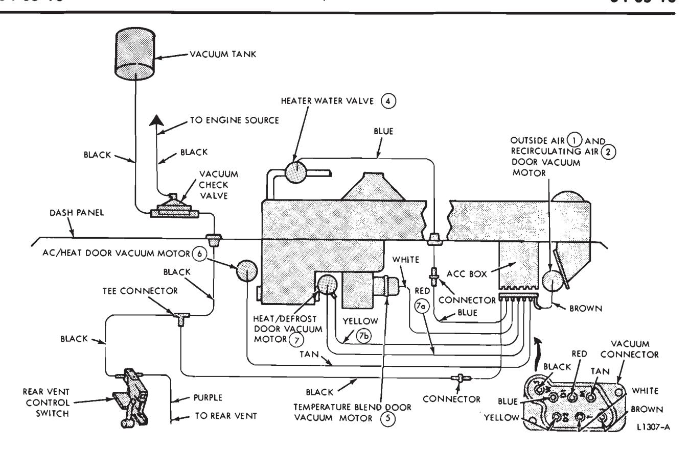
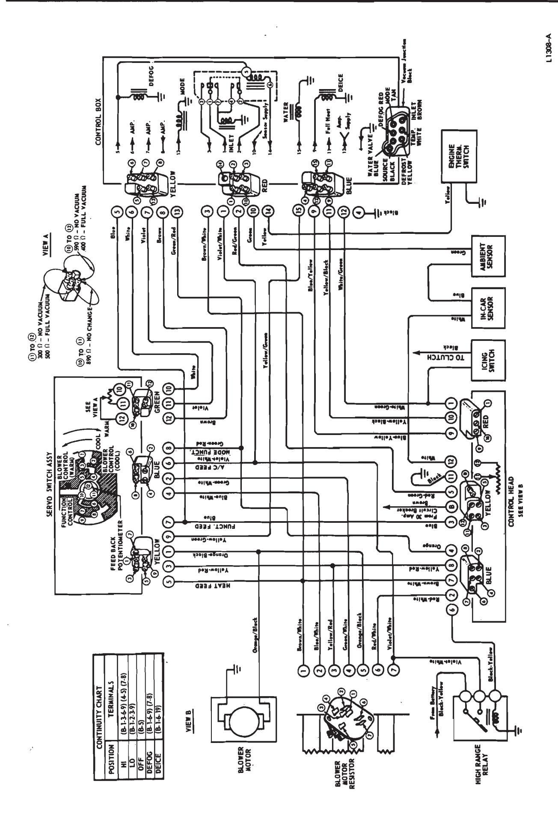

Automatic Temperature Control · 34-05-02a
Fig. 16 gives an electrical schematic of the automatic climate control system. Use Figs. 14 and 16 as aids in performing the following tests:
Temperature Sensors and Rheostat Test
The following test is to be used to determine if the air temperature sen- sors, the temperature control lever rheostat and the interconnecting wiring are operating properly. All three of these components are connected in series between the A.C.C. box and ground.
The vehicle and sensors must be at approximately 70 degrees F to 80 degrees F, for an accurate test. Set the temperature control lever at 75 degrees. Disconnect the red electrical wiring connector from the A.C.C. box. Connect the Rotunda ohmmeter between the green wire terminal of the electrical harness and the vehicle body. Observe the resistance.
With the surrounding air temperature between 70 degrees F. and 80 degrees F., the resistance of the sensor string and rheostat should be between 1200 and 1300 ohms. If the re- sistance measured is somewhat higher or lower than that specified, check the resistance of the individual sensors and the rheostat. If the sensors and rheostat check out correctly, the interconnecting wire is loose or disconnected.

Fig. 15 — Automatic Climate Control Vacuum System Schematic—Thunderbird and Continental Mark III
Outside Air (AMBIENT) Temperature Sensor Test
Disconnect the two terminal connectors at the sensor on the outside air (1) and recirculating air door (2), and connect the ohmmeter across the two terminals. The resistance should be between 165 ohms and 185 ohms with a surrounding (ambient) temperature of approximately 70 degrees F. to 80 degrees F.
Temperature Control Rheostat Test
Use the Rotunda ARE 27-42 ohmmeter and measure the total resistance of the disconnected rheostat with the temperature control set for 85 degrees. Then set the temperature control at 65 degrees and again note the resistance reading. The difference in resistance between the 65 degrees and 85 degrees dial setting should be between 400 and 500 ohms. If the difference in resistance is less than 400 ohms, the rheostat does not have the right resistance value or has a loose shaft set screw. If the resistance difference is more than 500 ohms, the rheostat does not have the right resistance value.
In-Car Air Temperature Sensor Test
Disconnect the wiring connector from the ambient temperature sensor located on the recirc-inlet air door. Connect an ohmmeter between the blue wire at the ambient temperature sensor connector and the white wire connector at the rheostat connector.
The in-car sensor resistance should be between 750 ohms and 900 ohms. If the test shows infinite resistance, the wiring to the sensor is not connected or the sensor is broken.
Functional Control Switch Test
The five position switch may be checked with a continuity tester. Use an ohmmeter or self powered test light. There should be electrical continuity between the indicated termi- nals for each switch position as shown in Fig. 17. If not, the rotary switch is not operating properly.
High Range Relay Test
The high range relay is located on the right fender apron close to the dash panel. The relay, when energized, by-passes the control head switch and the low range resistor, and supplies power directly to the A/C portion of the temperature blend door (5) power servo switch blower control and also to the heat portion of the switch by way of the cold engine relay in the A.C.C. box.
If the relay is not operating properly, there will be no blower speed change when shifting the functional control lever from low to high when the power servo switch is calling for higher blower speed. To check this, set the temperature control lever for maximum heating or maximum cooling.
If the blower does operate, but there is no change in speed as the functional control lever is moved from low to high, or vice versa, it indicates that the relay or its associated wiring is not functioning properly.

Fig. 16 — Automatic Climate Control Electrical Schematic
| SWITCH POSITION | CONTINUITY BETWEEN | |
|---|---|---|
| OFF | Brown Wire in yellow connector | Red-Green wire in yellow connector |
| нісн | Brown wire in yellow connector | Blue wire in yellow connector White-Green wire in red connector Blue-yellow wire in red connector Black-Yellow wire in blue connector |
| rom | Brown wire in yellow connector | White-Green wire in red connector Blue-Yellow wire in red connector Red-White wire in blue connector Blue wire in yellow connector |
| DE-FOG | Brown wire in yellow connector | White-Green wire in red connector Blue-Yellow wire in red connector Black-Yellow wire in blue connector |
| Violet-White wire in blue connector | Yellow-Red wire in blue connector | |
| DE-ICE | Brown wire in yellow connector | Black-Yellow wire in blue connector White-Green wire in red connector Yellow-Black wire in red connector |
Fig. 17 — Functional Control Switch Test
Heater Water Valve (4) Test
The heater water valve (4) is used to cut off the flow of engine coolant through the heater core when the A.C.C. box and power servo calls for maximum air conditioning with recirculated air. The valve is open in the OFF position.
To check the heater water valve (4), set the temperature control for 85 degrees. With the functional control lever set at LOW, run the engine until the water is warm. Check for the proper temperature blend door (5) vacuum motor position; it should be between the mid and full vacuum position. Warm air should be discharged from the heater ducts. If the air is not warm, check the heater water valve (4) by removing the 1/8 inch vacuum line from the valve and noting if a vacuum is available. If vacuum is available and no heat is noted, the heater water valve (4) should be replaced.
Blower Motor Current Draw Test
Connect a 0-50 ammeter between the positive post of the battery and the blower motor orange wire. The motor should operate. The current draw should be approximately 17-23 amperes.
A.c.c. Control Box Test
Figure 18 gives the procedures for testing the A.C.C. control box.
Power Servo Test
Figure 19 gives the procedures for testing the power servo.